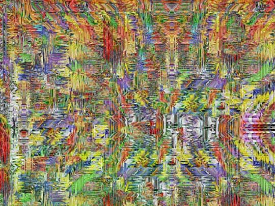

John Clive
digital abstractions
NOTES
John Clive is a leading visual effects designer in the film industry and has pioneered such digital effects as crowd-cloning, morphing and photo-realistic animation. The digital abstractions shown here are clearly borne of this work and are brilliant examples of algorithmic-driven computer art. But he writes, "These pictures come about by a process of improvisation, jamming with the software. I participate in the evolution of the image. If an image ends up looking like skin or stone it is not because I intended it to do so. The computer enables me to explore and celebrate the complexity of the physical world." Born in central London in 1953, John still lives and works there, and is married to the actress Michelle Newell with whom he has a 15-year old daughter Florence. He studied at the Ealing School of Art, worked early in his career as an advertising copywriter and started directing television commercials in 1978. He is also a writer, film and theater director, and winner of many international awards for his film work
A major rethink
|
 |